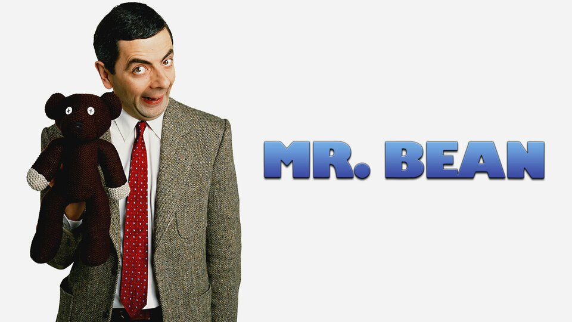
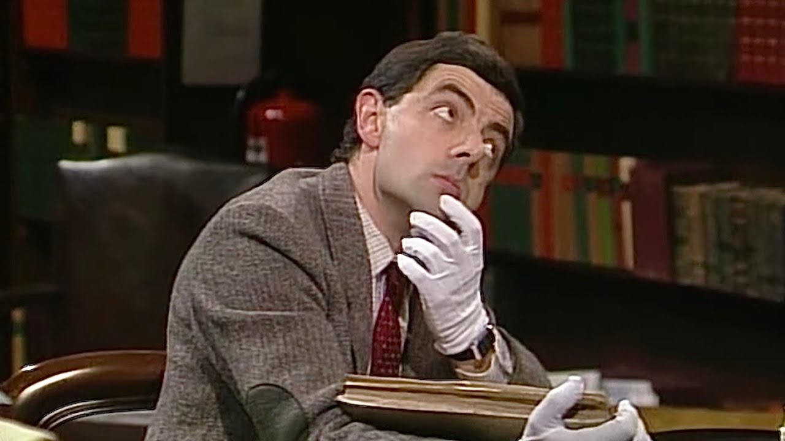

"Mr. Bean" is about this goofy, kinda childlike dude who's always messing up simple stuff. But, check it, his wild, out-of-the-box thinking gets him through the craziest situations. It's all about his nutty adventures in everyday life, packed with laughs and wild Bean-style solutions!
CharactersMr. Bean Played by: Rowan Atkinson Yeah, that's really it :) |